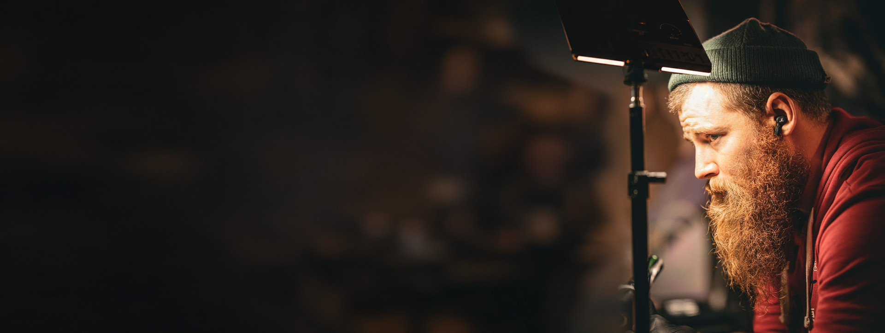
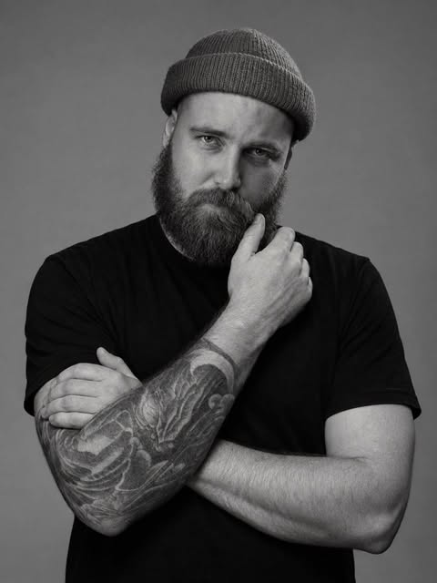

Anatoly Tsar
Tetovanie
s vlastným rukopisom.
Stačí prvá predstava. Detaily preberieme spolu.
Vybrané práce
Farba · predlaktie
Farba. Svetlo. Detail.
Živopisný portrét, sýta modrá a teplé zlaté tóny.


Ďalšie práce a momenty z tvorby: @anatoly.tattoo (Instagram, nové okno)

O mne
Najprv maliar.
Potom tatér.
Kresba a maľba sú so mnou od detstva. Päť rokov som študoval maľbu a od roku 2012 tvorím aj na koži.
Dnes tetujem v Banskej Bystrici. Máš konkrétny motív alebo len prvú predstavu? Môžeme začať rozhovorom.
Pred prvou správou
Stačí prvá predstava.
Nemusíš poznať názov štýlu ani mať hotový návrh.
Kde tetuješ?
V Banskej Bystrici. Konkrétne miesto a termín si dohodneme v správe.
Musím mať hotový návrh?
Nie. Môžeš začať tým, čo sa ti páči, alebo miestom na tele. Smer nájdeme spolu v rozhovore.
Čo mám poslať v prvej správe?
Pár slov o nápade, miesto na tele a približnú veľkosť. Pomôžu aj referencie — obrázky alebo práce, ktoré sa ti páčia. Nič z toho nie je povinné.
Ako sa dohodneme na cene a termíne?
Cenu a termín si dohodneme v rozhovore podľa motívu, veľkosti a miesta na tele. Prvá správa je len začiatok rozhovoru, nie rezervácia.
Ďalší krok
Tvoj nápad začína
rozhovorom.
Stačí prvá predstava. Detaily preberieme spolu.